Гид по странице вечерний макияж
Пошаговый вечерний макияж
Стойкий и выразительный образ для мероприятия
Топ средств для вечернего макияжа
Стойкие текстуры и идеальный финиш
Премиум-средства для вечернего макияжа
Эффект «дорогой кожи» и безупречного образа
Бюджетный набор для вечернего макияжа (до 500 MDL)
Минимальный набор для стойкого и красивого макияжа
Запишитесь к профессиональному визажисту
Запишитесь на вечерний макияж в Молдове и получите стойкий, выразительный и элегантный образ, который идеально выглядит при любом освещении.
Что такое вечерний макияж
Вечерний макияж — это техника, направленная на создание выразительного, стойкого и элегантного образа, который подчёркивает черты лица и выглядит эффектно при вечернем освещении, фотосъёмке и на мероприятиях.
Такой макияж отличается более насыщенными оттенками, аккуратной растушёвкой и стойкими продуктами. В отличие от дневного макияжа, вечерний макияж позволяет делать акценты на глазах или губах, создавая яркий, но гармоничный образ.
Основная задача — добиться идеального тона кожи, выразительного взгляда и баланса между акцентами. При этом важно избегать перегруженности, чтобы макияж выглядел аккуратно и «дорого».
Вечерний макияж идеально подходит для мероприятий, свадеб, фотосессий, ужинов и важных встреч — он делает лицо более выразительным, фотогеничным и уверенным.
Почему вечерний макияж делает образ более выразительным и ухоженным
- подчёркивает черты лица и делает вечерний образ более выразительным
- создаёт эффект аккуратного и профессионального макияжа
- выравнивает тон кожи и скрывает несовершенства
- делает лицо более ярким и фотогеничным при вечернем освещении
- выглядит стойко и «дорого» на мероприятиях и фотосессиях
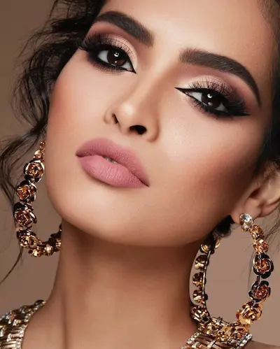
Подготовка кожи для вечернего макияжа
Вечерний макияж начинается с правильной подготовки кожи. Даже самые стойкие тональные средства не создадут эффект гладкой, ровной и ухоженной кожи, если она обезвожена или имеет неровную текстуру.
Грамотная подготовка кожи помогает добиться идеального покрытия, увеличивает стойкость вечернего макияжа и обеспечивает аккуратный, профессиональный результат без перегруженности.
- Очищение — мягкое средство для чистой и подготовленной кожи
- Увлажнение — крем или сыворотка для гладкости и эластичности
- SPF (днём) — защита кожи и сохранение ровного тона
- База под макияж (primer) — выравнивает текстуру и продлевает стойкость макияжа
Перед нанесением макияжа важно подождать 5–10 минут, чтобы средства полностью впитались. Это предотвращает скатывание продуктов и помогает создать стойкий вечерний макияж, который сохраняет аккуратный вид в течение всего мероприятия.
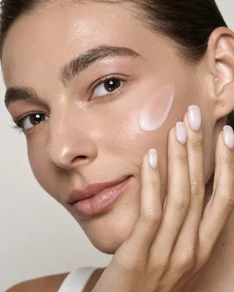
Пошаговый вечерний макияж


Вечерний макияж строится на сочетании стойкости, выразительности и аккуратной растушёвки. Его задача — подчеркнуть черты лица, создать эффектный образ и сохранить безупречный вид в течение всего вечера — на мероприятиях, фотосессиях и при искусственном освещении.
Стойкий тон
Используйте тональный крем со средним или плотным покрытием и натуральным или сатиновым финишем. Он должен выравнивать кожу и держаться без эффекта маски.
Консилер
Проработайте зону под глазами и несовершенства. Вечерний макияж требует более аккуратной коррекции, но важно сохранить естественный вид кожи.
Контуринг и румяна
Лёгкий контуринг добавляет глубину лицу, а румяна освежают образ. Все переходы должны быть мягкими и хорошо растушёванными.
Макияж глаз
Основной акцент вечернего макияжа. Используйте тени с растушёвкой, подводку или smoky eyes — в зависимости от образа. Важно создать выразительный, но гармоничный взгляд.
Хайлайтер
Добавьте лёгкое сияние на выступающие зоны лица. Вечером важно не переборщить, чтобы сохранить эффект «дорогой кожи», а не блеска.
Губы
Выберите акцент: нюд для баланса или яркую помаду для выразительного образа. Главное — гармония с макияжем глаз.
Идеальный вечерний макияж — это стойкий, аккуратный и выразительный образ, который подчёркивает ваши черты лица и выглядит безупречно в любой ситуации.
Топ средств для вечернего макияжа
Вечерний макияж требует стойких, пигментированных и выразительных средств: плотный тон, насыщенные тени и акцентные губы.
Независимый обзор. Продукты не спонсируются.
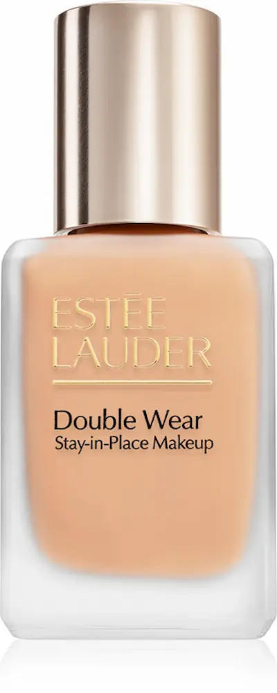
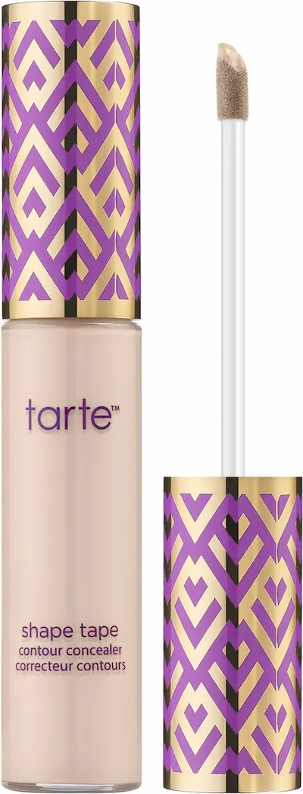
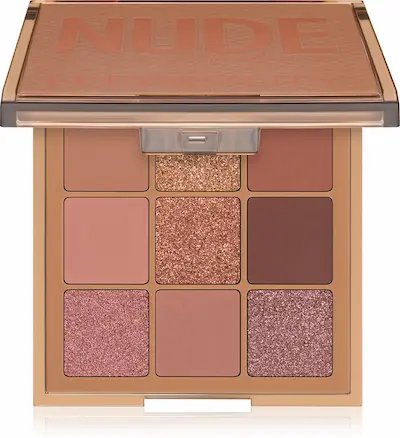
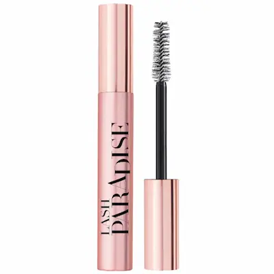
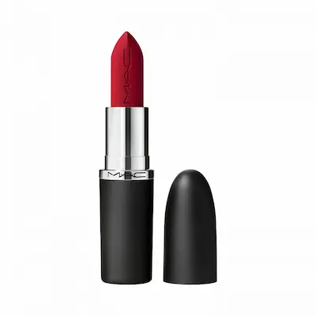
Премиум-средства для вечернего макияжа
Независимый обзор. Продукты не спонсируются.
Премиальные продукты для вечернего макияжа отличаются высокой стойкостью, насыщенной пигментацией и безупречным финишем. Они создают выразительный, «дорогой» образ, который держится весь вечер.
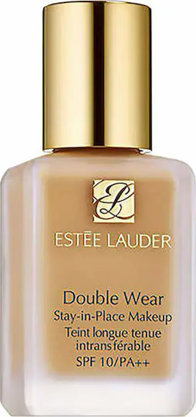

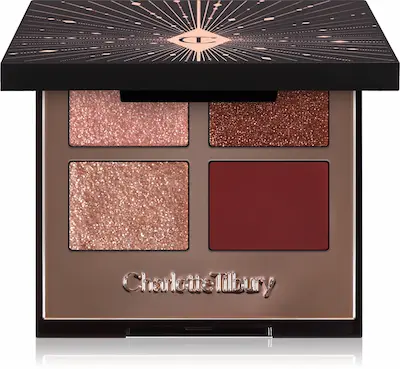
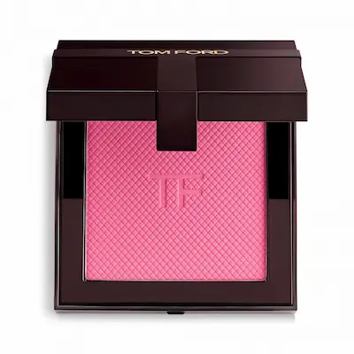
Частые ошибки в вечернем макияже
- слишком плотный тон с эффектом «маски»
- перегруженные глаза и губы одновременно
- плохая растушёвка теней и контуринга
- неправильная фиксация макияжа
- избыточный блеск или, наоборот, слишком матовый финиш
Вечерний макияж требует баланса: он должен быть выразительным, но не тяжёлым. Ошибки в текстурах и растушёвке сразу делают образ менее аккуратным и «дешёвым».
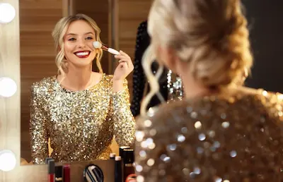
Как сделать вечерний макияж стойким и безупречным
Вечерний макияж должен выдерживать свет, фото, эмоции и длительное время. Главная задача — сохранить идеальный вид кожи и выразительность без скатывания и потери интенсивности.
1. Правильная база
Используйте праймер под тип кожи: матирующий для жирной кожи или увлажняющий для сухой. Это продлевает стойкость и делает тон более ровным.
2. Стойкий тональный крем
Выбирайте тон с хорошей фиксацией и средним или плотным покрытием. Вечерний макияж требует идеального тона без просвечивания несовершенств.
3. Закрепление кремовых текстур
Все кремовые продукты (тон, консилер, контуринг) важно закреплять пудровыми средствами. Это предотвращает скатывание и продлевает стойкость.
4. Стойкие тени и подводка
Используйте базу под тени и водостойкие формулы. Это сохраняет насыщенность цвета и предотвращает отпечатывание на веках.
5. Фиксация спреем
Фиксирующий спрей объединяет все слои макияжа, убирает эффект пудры и помогает сохранить макияж в идеальном состоянии на протяжении всего вечера.
Идеальный вечерний макияж — это не только выразительность, но и стойкость: кожа выглядит ровной, а макияж остаётся безупречным даже спустя несколько часов.
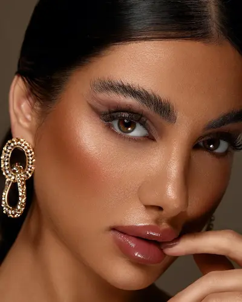
Кому подходит вечерний макияж
Вечерний макияж подходит практически всем, но важно правильно адаптировать его под тип кожи и особенности лица. Главная задача — подчеркнуть черты и создать выразительный, но гармоничный образ.
- Нормальная кожа: хорошо переносит плотные и стойкие текстуры — можно использовать как матовый, так и сияющий финиш.
- Сухая кожа: требует увлажняющей базы и кремовых продуктов, чтобы избежать эффекта сухости и подчеркнутой текстуры.
- Комбинированная кожа: важно сбалансировать макияж — матировать Т-зону и оставить лёгкое сияние на скулах.
- Жирная кожа: лучше выбирать стойкие матирующие средства и фиксировать макияж, чтобы избежать блеска в течение вечера.
- Кожа с акне или текстурой: используйте среднее или плотное покрытие с хорошей растушёвкой, избегая перегрузки и «эффекта маски».
Идеальный вечерний макияж — это адаптация: он подчёркивает достоинства, скрывает несовершенства и выглядит гармонично при любом освещении.
Бюджетный набор для вечернего макияжа (до 700 MDL)
💡 Общая стоимость набора: ~600–700 MDL
Независимый обзор. Продукты не спонсируются.


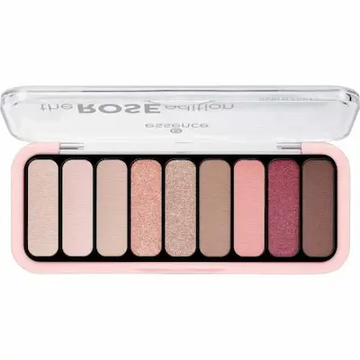
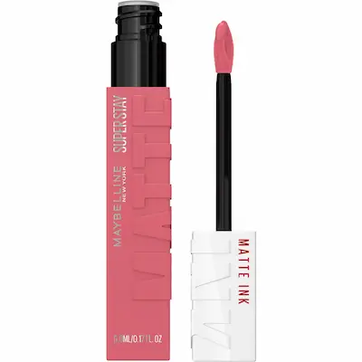
Не уверены, как сделать идеальный вечерний макияж?
Вечерний макияж требует точной техники: стойкий тон, выразительные глаза и правильный баланс между акцентами. Один неверный шаг — и макияж может выглядеть перегруженным или не выдержать вечер.
Запишитесь к профессиональному визажисту и получите стойкий вечерний макияж, который подчеркнёт ваши черты, будет идеально выглядеть при искусственном освещении, на фото и сохранится безупречным до конца мероприятия.
Записывайтесь на макияж.

Частые вопросы о вечернем макияже
Чем вечерний макияж отличается от дневного?
Вечерний макияж более выразительный и стойкий. Используются более плотные текстуры, насыщенные оттенки и акценты (глаза или губы). Он рассчитан на искусственное освещение, фото и длительное ношение.
Сколько держится вечерний макияж?
При правильной технике и использовании стойких средств вечерний макияж держится 6–12 часов и дольше. Важно использовать базу, фиксирующую пудру и спрей для закрепления.
Как сделать вечерний макияж стойким?
Используйте праймер, стойкий тональный крем, кремовые и сухие текстуры в комбинации, а также фиксирующий спрей. Лёгкая фиксация пудрой в Т-зоне помогает избежать блеска и продлевает стойкость.
Что выбрать: акцент на глаза или губы?
Классическое правило — один акцент. Яркие smoky eyes лучше сочетать с нейтральными губами, а насыщенная помада — с более спокойным макияжем глаз. Это делает образ гармоничным и «дорогим».
Подходит ли вечерний макияж для фотосессий?
Да, это один из лучших вариантов. Вечерний макияж хорошо передаётся на камеру, подчёркивает черты лица и выглядит выразительно при студийном и вечернем освещении.
Можно ли сделать вечерний макияж самостоятельно?
Да, но требуется практика и правильный подбор продуктов. Для важных мероприятий (свадьба, съёмка, событие) лучше обратиться к визажисту, чтобы получить гарантированный результат и стойкость.